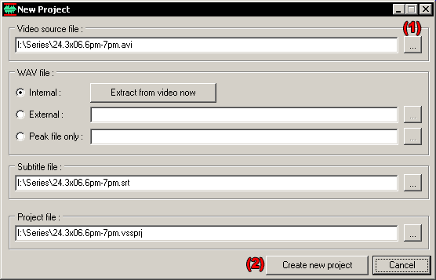
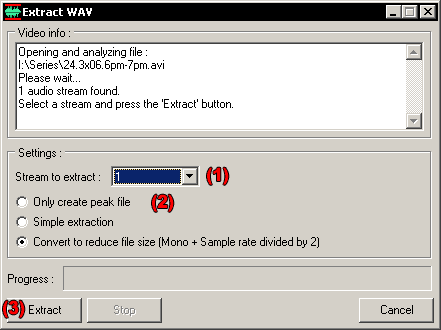
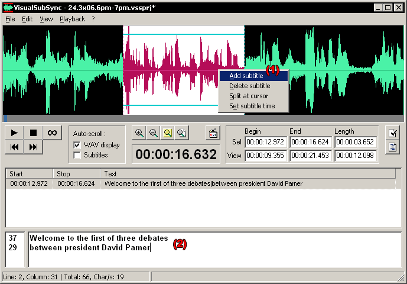
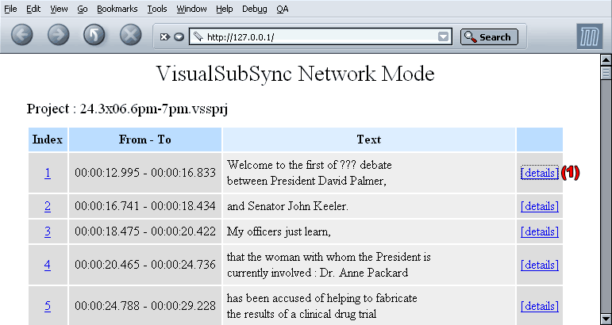
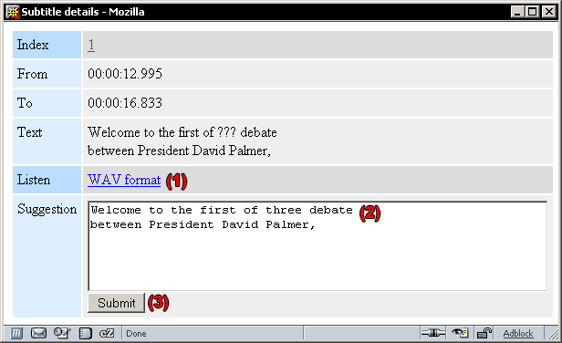
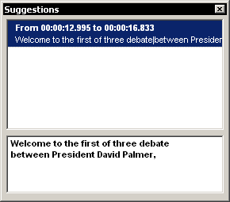

Requirement :
- VisualSubSync installed.
- The video of your series, I use an episode of "24" here.
Here we go, let's start VisualSubSync and choose in the menu
File>New Project...
I use the little browse button (1) to select my video. Once it's done I
get this screen :

For the WAV file I keep Internal checked so the WAV will be extracted
at the next step.
The 2 last fields (Subtitle file and project file) are automatically
pre-filled, I keep them like that.
Now I click the Create new project button (2), and I get to the
Extract WAV dialog below :

If our video file as several audio stream we can select one in the
Stream to extract combo box (1).
For the WAV extraction we have 3 different choices (2).
In the 3 cases a peak file will be created. A peak file contain a
highly reduced resolution version of the WAV file, which is used
to display the audio form. Using the WAV file directly will be too slow, it will
require to process a too large amount of data.
If you choose Only create peak file the video file will be used for
audio preview so no more space will be required on your HD,
but it's less efficient for audio preview, you will have a little start delay for example.
The Simple extraction option will just decompress the audio stream
without any modification, so it can create quite big files.
I advise to use the last option Convert to reduce file size, it will
create a WAV in a little reduced resolution but keeping enough quality
to have a still comfortable listening.
Ok, now we are set, I now click the Extract button (3) and we just
have to wait now, extraction will take 2-3 minutes.
Finally we are ready to start the real work, this is the main window :
The interface can be divided in 4 different parts :
(1) the WAV display
(2) controls for listening, and informations about WAV display
(3) the subtitle list
(4) the subtitle edition, with the number of characters by line in the left part and the subtitle text in the right part
An important thing to remember is the shortcut used to control the WAV display part :
- Zoom-in/out centered on mouse cursor position : mouse wheel up/down.
- Left/right panning : middle button mouse press + mouse left/right.
- Faster left/right panning : shift key + middle button mouse press + mouse left/right.
- Selection : mouse left click.
- Expanding selection : shift key + mouse left click.
Ok, let's add a subtitle now.
First, I zoom a bit using mouse wheel up and go to start of the audio stream using the
little grey scrollbar, then I start playing using the play button
or F1. I select a part of the WAV display using mouse left click and to check
that I have the right part I press F1 again to listen to the audio. I
readjust the selection keeping the shift key pressed and left clicking
in the WAV display part. Once I'm satisfied I right click in the WAV
display part and select Add subtitles (1).

The focus is now set in the subtitle edition part, so I enter the text
for this subtitle (2).
You can notice some little statistics in the status bar, like the
position of the cursor, the total number of characters and the number
of characters by seconds which is usefull to check if your subtitle
has a long enough display time (between 15-20 Char/s seems good).
If I don't understand some words I just put some ??? you will see later why.
Some time later.... Ouff I've finished typing all the text.
Lets's use the error checking function now, it's available from the
menu Edit>Error checking>Check errors.
Different types of error are reported, 4 at the moment :
- Overlapping : An error is detected when the subtitle overlap on next subtitle.
- Too short display time : An error is detected when the number of Char/s is strictly superior to a specified value.
- Too long display time : An error is detected when the number of Char/s is strictly inferior to a specified value.
- Too long line : An error is detected when the line length in a subtitle is strictly superior to a specified value.
Double clicking on a line will place you on the subtitle with the error.
When most of the error are corrected we should have pretty good subtitles.
Now a special feature for people who's native language is different
from the original video. (like me :-D)
VisualSubSync include a little network mode. To enable it select the
menu Edit>Webserver>Start.
Give your ip address to your friend, or your domain name if you have one,
and they will be able to help you by using any web browser.
They just have to enter http://your-ip-address or http://your-domain-name in their browser.
You can of course configure the port used in case you already have a web server by going in
Edit>Preferences...
Then to check if it works or see how it looks you
can use locally http://127.0.0.1

Clicking on [details] open the following page :

Here you can listen to the subtitle audio (1), complete the words missing
(2), and finally submit your suggestion (3).
In return you get the suggestion in VisualSubSync by using Edit>Web
server>Show suggestions :

You can correct the text of your subtitle, and your friend will see the text
modification instantly by refreshing his browser.